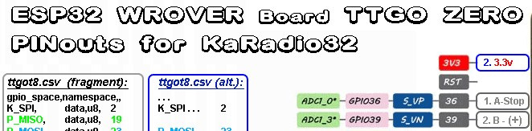
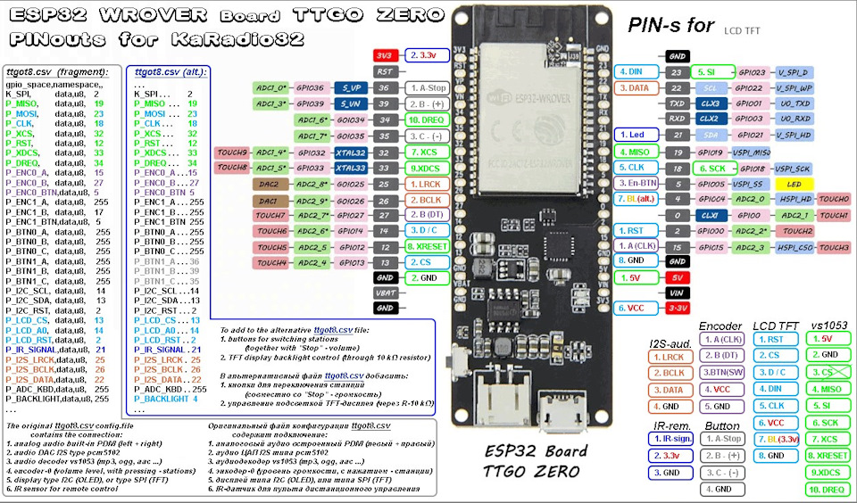
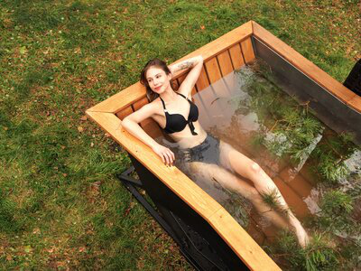
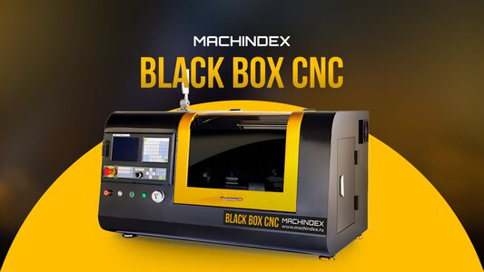
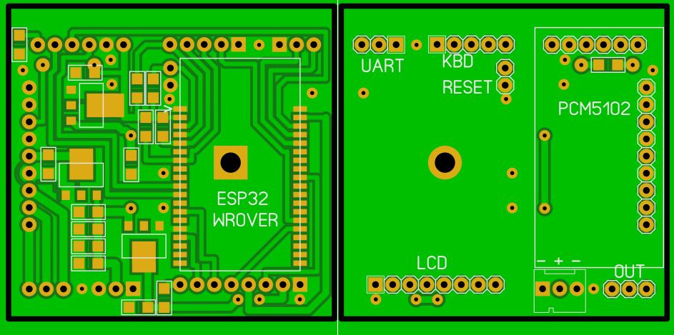

Файл конфигурации для KaRadio32 — FAQ
МашиныБортжурналыСообществаАвтосервисы и магазиныБарахолкаСамое интересноеМашины в продаже
Файл конфигурации для KaRadio32 — FAQ
30 марта 2019
РЕКЛАМА•16+
nadim24 Был 2 месяца назад
46 лет
Я езжу на Geely CK 2 Comfort 1.5 GL
Днепр, Украина
Подписаться
--- Сам проект Ka-Radio32 ---
1. FAQ — Начало всей истории — среда, команды и т.д.
2. FAQ — Настроенная среда разработки Питон — msys32 для KaRadio32
3. FAQ — Файл конфигурации для KaRadio32
4. FAQ — Прошивка KaRadio32 — Платы — Комплектующие
5. WiFi радио — версия 2.0 — KaRadio32
6. WiFi радио — версия 2.2
7. WiFi радио — версия 2.9
Пользователь maleksm — сайт arduino ru — с его разрешения выкладываю — составил методичку (за что ему большое спасибо) по созданию файла конфигурации под собственные "хотелки" для KaRadio32.
Для начала определяемся с железом:
1. Какая ESP-шка (WROOM, WROVER, желательно модель, производитель)
2. Есть ли и какой дисплей (ну, здесь уже известно)
3. Какая звуковушка (PDM, pcm5102, или vs1053)
4. Есть ли энкодер и в каком режиме он должен работать (станции или громкость), а может два энкодера
5. Есть ли кнопки и в каком режиме они работают (станции или громкость), а может два набора кнопок
6. Есть ли джойстик
7. Есть ли ардуиновская клавиатура
8. Есть ли пуль дистанционного управления
Определились:
1. ESP-шка WROOM 30 пин.
2. Дисплей 1.8 SPI 160*128.
3. Звуковая vs1053 красная.
4. Энкодер должен работать в режиме выбора станций.
8. Пульт ДУ.
…
Итак, простая конфигурация. Радио на ESP32 с TFT-дисплеем 1.8, vs1053, энкодер по станциям и инфракрасный пульт.
С этим определились.
Сборка конфига:
1. Идём на гитхаб в проект Ka-Radio32 (у нас же ESP32). Скачиваем zip-архив проекта целиком (примерно 60 Мб), нажимая зелёную кнопочку справа "Clone or download".
2. Открываем архив и идём в папку "\Ka-Radio32-master\boards". Это папка с конфигами под разные boards (платы). Видим там целую пачку csv-файлов. Это файлы конфигураций, притом, это текстовые файлы — их можно править в простом блокноте Windows. Выбираем один из них, для нас наиболее подходящий. Это будет "standard_minimal.csv". Потому что у нас не Lolin, ни Odroid, ни TT GO, а обыкновенная, стандартная ESP32, притом без добавленной PSRAM. Вытаскиваем этот файл из архива в какую-нибудь специально приготовленную папку. Здесь мы его и будем править. Переименовываем наш csv-файл, например, в "samodelka.csv", чтобы не путать его с другими файлами. У нас всё готово чтобы начать его "постройку".
3. Открываем наш файл блокнотом для редактирования. Видим структуру файла конфигурации, состоящего из 4-х разделов. Будьте аккуратны! Ничего без нужды не меняем, никаких лишних символов и пробелов (особенно в конце строк) не вставляем. 1-й раздел "label" — это метки для правильной обработки файла программой, его не трогаем. Нас интересует 2-й раздел "gpio" с номерами ПИН-ов подключения всех устройств. Настройки из этого раздела никаким другим образом вашему радио не задать. За него и возьмёмся.
4. Рядом с окном блокнота открываем окно с постом 5194 нашей темы. В нём видим подключение TFT LCD дисплея (выделено голубым цветом): нумерация 8-ми контактов платы 1.8 дюймовика по GPIO нашей ESP-шки. А также мигающие строки конфигурационного файла, в которые надо вписать необходимые номера GPIO. Таким образом определяем (или из картинки, чтобы позже припаять, или из уже реально распаянной платы) что куда подключено и что надо проверить или изменить в нашем конфиг-файле.
Итак, определили,
► 1-й контакт дисплея "RST" на GPIO-02, значит в строчке конфига, описывающей этот контакт "P_LCD_RST" надо вписать номер соответствующего GPIO, т.е. "2". (Кстати, здесь так и есть, значит не меняем.)
► Далее 2-й контакт "CS" на GPIO-13, вписываем в конфиг в строчку "P_LCD_CS" число "13" (тоже не меняем).
► Далее дисплейный "3. D/C" на GPIO-14 — в строчку "P_LCD_A0" число "14" (не меняем).
► Следующий "4. DIN" — GPIO-23 — в конфиге строчка "P_MOSI" — число "23".
► Потом "5. CLK" — GPIO-18 — строчка "P_CLK" число "18".
► 6-й контакт — питание, в зависимости от дисплея (или перемычки на нём) припаивается на +5 или +3,3 вольт, в конфиге ПИН-ы питания и массы не указываются.
► 7-й контакт, это подсветка, "7. BL" — GPIO-04 — строчка "P_BACKLIGHT" меняем на число "4".
► И, наконец, "8. GND" — понятно.
Всё с дисплеем и его конфигом покончено.
Напомню. Если распай уже сделан, сверяем с конфигом, чтобы всё соответствовало.
5. Приступим к vs1053. Делаем всё аналогично. Прокручиваем тему до поста 5197, там подключение ВС-ки. Первые два контакта платы — понятно. Третий можно не использовать.
► "4. MISO" — GPIO-19 — строка "P_MISO" — "19".
► "5. SI" — строка "P_MOSI" — "23".
► "6. SCK" — "P_CLK" — "18".
► "7. XCS" — "P_XCS" меняем на "32".
► "8. XRESET" — "P_RST" — "12".
► "9. XDCS" — "P_XDCS" — "33".
► Наконец "10. DREQ" — "P_DREQ" — "34".
Всё. Готово.
6. Так же поступаем с энкодером. Перематываем до поста 5199. Утитываем, что декодер по станциям, поэтому назначаем его в конфиге строчками "P_ENC1", а в строках напротив "P_ENC0" ставим цифры "255", что означает, что это устройство (энкодер по громкости) не используется и при работе не будут тратиться ресурсы на его обслуживание. (Да и цифровых помех на звук от этого становится меньше.) Итак, получаем строки
► "P_ENC1_A, data, u8,15",
► "P_ENC1_B, data, u8,27",
► "P_ENC1_C, data, u8,5".
С энкодером всё.
7. Осталась IR-дистанционнка. Пост 5200. Строчка "P_IR_SIGNAL" меняем число "255" на "21". На этом с IR всё.
8. Теперь проверим все другие строки с устройствами и отключим ненужные, т.е. в конце строк проставим число "255". Это строки практически соответствуют выше указанному полному перечню подключаемого оборудования, относящиеся
► к двум группам кнопок "P_BTN0" и "P_BTN1", которые мы не используем,
► тачскрину "P_TOUCH_CS",
► джойстикам "P_JOY_0" и "P_JOY_1",
► диоду индикации "P_LED_GPIO"
► и клавиатуре "P_ADC_KBD".
Как видим, многие из них и так имеют число "255", т.е. отключены. Это и понятно, ведь файл — "minimal".
Теперь все наши устройства сконфигурированы. На этом можно закончить с редактированием, но только до того времени, когда мы возьмёмся за добавление в конфиг IR-кодов. Они описываются 4-м разделом конфига "custom_ir". Мы видим, что в конце строк никакие коды пока не заданы. Эти коды невозможно внести в настройки Ka-Radio никаким иным образом, кроме как только через процедуру редактирования конфиг-файла и последующей его прошивки в устройство.
Но перед тем как закончить, я бы рекомендовал изменить ещё пару строк из 3-го раздела конфиг-файла "option". Хоть задаваемые им параметры могут быть изменены подачей специальных команд из терминала, но мы сделаем это до прошивки, прямо в файле конфигурации. Так спокойнее и надёжнее.
9. Итак, редактируем 3-й раздел конфига.
► В строку "O_LCD_TYPE" — это тип нашего дисплея, вместо "0" вписываем число "192". Мы ведь знаем свой дисплей.
► Далее в строке "O_LCD_ROTA" — это переворот изображения на дисплее, оставляем "0" (или пишем "1", если надо перевернуть).
► В строке "O_LCD_OUT" указываем число секунд, через которые нужно гасить подсветку дисплея. Пока оставляем "0" — значит не гасим.
► И в строку "O_DDMM_FLAG" — это формат выводимой на дисплей даты, пишем "1", что означает показывать сначала день, потом месяц и год.
Вот теперь файл нужно сохранить. Он готов, наш файл конфигурации "samodelka.csv".
10. Итак, самая главная работа по созданию конфиг-файла сделана. Теперь осталось сконвертировать его в BIN-файл для залития в устройство.
Portable Configuration File generator
Для тех кто не понимает как сгенерировать файл конфигурации под KaRadio32 собрал портативную версию версию.
Скачиваете мой архив и распаковываете, далее копируете в корень папки Config_GEN свой конфиг.csv, далее корректируете файл run_gen.cmd — нужно поменять имена файлов на входе nadim.csv и на выходе nadim.bin на свои. Запускаем run_gen.cmd и получаем в папке Config_GEN\build свой бинарник для прошивки,
а далее его прошиваете через FLASH_DOWNLOAD_TOOLS
Config_GEN_new.zip — генератор — .bin файла
Второй вариант от Pilnikov Alex
Расширенная инструкция / все файлы (всего 3 штуки) лежат тут github.com/…/master/esp-adf/examples/Ka_mod/boards
Еще надо поставить git отсюда git-scm.com/downloads
после этого вам нужно будет отредактировать один файлик из папки с проектом карадио — nvs_partition_generator.sh лежит в папочке boards (вместе с конфигурациями) В него надо дописать следующую строчку
python ./esptool.py --chip esp32 --port com5 --baud 921600 --before default_reset --after hard_reset write_flash -z --flash_mode dio --flash_freq 40m --flash_size detect 0x3a2000 build/${fname}.bin
только вместо сом5 — подставить порт своей платы. После этого встать на папку boards нажать ПКМ — и выбрать git bash here. В открывшемся окне набрать ./nvs_partition_generator.sh standart где standart — это имя вашего файла .csv — после нажатия enter конфиг автоматом сгенерится и зальется в вашу плату. В дальнейшем можно вообще ничего в окне bash не набирать — просто выбрать последнюю команду из списка истории курсором. Работает все локально — без интернета.
Подборка картинок по всей этой писанине на sH18 диске.
30 марта 2019
13
Поделиться:
РанееRDA5807M новая жизнь старых и новых радиоприемниковДалееDAC TDA1387 (KaRadio32) — как побороть щелчки при переключении
Реклама

sibach.store
РЕКЛАМА
Новинка! Компактный Сибирский Банный Чан с подогревом!

blackbox.machindex.ru
РЕКЛАМА
МИНИ Токарный станок с ЧПУ BLACKBOX.
blackbox.machindex.ru
РЕКЛАМА
МИНИ Токарный станок с ЧПУ BLACKBOX.
Бесшумные ротационно-динамические дефлекторы ROTADO.
Teyes CC3/CC3L: обновление программного обеспечения (прошивки) с помощью TEYES FOTA
3.2 — Полуавтоматическая установка приложений в ГУ ( hackchan )
Крым 2025. Часть 7. Ялта и Aй-Петри
Крым 2025. ИТОГИ поездки, рекомендации.
AGAMA + CRAB новое слово в лаунчерах для ГУ.
Войдите или зарегистрируйтесь, чтобы писать комментарии, задавать вопросы и участвовать в обсуждении.
Я езжу на Renault Sandero 1G
И ещё, я не буду использовать дисплей. Мне надо отключить в конфигураторе всё, что связано с дисплеем поставив 255?
Ответить1 год
Я езжу на Renault Sandero 1G
Вернулся к этому проекту. Сконфигурировал *.csv перевёл в bin, всё работает. 2 вопроса только.
1. при конфигурации указал O_LCD_OUT, data, u32,0 для настройки. Теперь нужно выключать дисплей например через 5 сек. Надо по новой конфигурировать и прошивать? Можно прошить только один конфигуратор? Или есть еще способ?
2. при компиляции csv в bin никак не хочет с моим названием компилировать, хотя всё переименовываю в "run_gen_1.9R7plus", только если csv назову "nadim"
Первый вопрос решил. Остался второй.
Ответить1 год
Я езжу на ЗАЗ Chance
Добрый день!
Если для дисплея 1.8 SPI 160*128 в строку конфигурационного файла "O_LCD_TYPE" — это тип нашего дисплея, вместо "0" вписываем число 192, то какое число надо указать для боле маленького дисплея 0.96 128X64 I2C SSD1306
По умолчанию там стоит число 255. В принципе, дисплей работает…Но немного смущает непонятный вертикальный столбец в левом углу.
Ответить4 года
Я езжу на Renault Sandero 1G
Поэкспериментировал с включением дисплея. Можно энкодер повернуть в право или в лево и сразу вернуть на место или нажать на кнопку энкодера чуть подольше, выйдет регулировка громкости, в любом случае дисплей включится, станция будет продолжать играть.
1
Ответить4 года
nadim24Автор
Я езжу на Geely CK
Есть проект на Raspberry pi — я сейчас себе собираю — посмотреть можно в моём блоге nadim.top/moode-audio-player-ustanovka-na-pi-zerow
Ответить4 года
Я езжу на Renault Sandero 1G
Спасибо.
Ответить4 года
Я езжу на Lada Ларгус
nadim24
Есть проект на Raspberry pi — я сейчас себе собираю — посмотреть можно в моём блоге nadim.top/moode-audio-player-ustanovka-na-pi-zerow
Ссайт не работает. А посмотреть хочется
Ответить4 года
nadim24Автор
Я езжу на Geely CK
Сайт закрыл (нужно платить за хостинг). Результат посмотреть можно тут
1
Ответить4 года
Я езжу на Toyota Prius (30)
Здравия желаю!
То, что на видео выше, платку купить можно? Для самостоятельной сборки.
Спасибо!
Ответить4 года
nadim24Автор
Я езжу на Geely CK
Плат в наличии нет. Можете сами заказать у китайцев на Гитхабе у автора есть платы в KiCad или спросите на форуме может есть лишние.
1
Ответить4 года
Я езжу на Renault Sandero 1G
Если крутнуть, то экран включится и переключится станция.
Ответить4 года
nadim24Автор
Я езжу на Geely CK
Тогда нужно писать разработчику
Ответить4 года
Я езжу на Renault Sandero 1G
P_LED_GPIO закомментировал . Все стало работать нормально. Спасибо. Еще вопрос, что бы включить экран нажимаю кнопку на
энкодере, экран включается но воспроизведение становиться на паузу. Как то можно будить экран не "тревожа" ничего?
Ответить4 года
nadim24Автор
Я езжу на Geely CK
А если не нажимать, а крутонуть энкодер на деление
Ответить4 года
Я езжу на Renault Sandero 1G
Спасибо, завтра проверю (все на работе).
Ответить4 года
Я езжу на Renault Sandero 1G
Что то сейчас посмотрел конфиг смутило это:
P_LED_GPIO, data, u8,4
P_BACKLIGHT, data, u8,4
Ответить4 года
nadim24Автор
Я езжу на Geely CK
Поэксперементируйте, закоментируйте led вместо 4 поставьте 255. Проверьте. Я проверить не могу, нет у меня сейчас рабочего кардио. Я делал себе то подсветка работала, но я делал через транзисторный ключ и не для распаянного дисплея.
Ответить4 года
Я езжу на Renault Sandero 1G
Подсветка подключена как у Вас в описании к пину 4. Мы же вроде в фале конфигурации прописали: Тип дисплея 192, подсветка на GPIO-04 и O_LCD_OUT пока поставил 0.
Ответить4 года
Я езжу на Renault Sandero 1G
Собрал по Вашему описанию Ka-Radio. Но дисплей на секунду покажет инфу и гаснет, через некоторое время происходит то же самое. Если подключу подсветку к 3,3 в., то все нормально только дисплей постоянно включен. Что это может быть? И как исправить?
Ответить4 года
nadim24Автор
Я езжу на Geely CK
Куда подключена подсветка? Если вы подключили к одному из gpio то есть несколько параметров которые настраиваются с помощью команды из терминала.
sys.lcdblv : Display current backlight percent value.
sys.lcdblv("x") : Set the backlight percent value (if the hardware provide it) (range 1 to 100)
sys.lcd : Display the current lcd type
sys.lcd("x") : Change the lcd type to x on next reset
sys.ledgpio : Display the default Led GPIO
sys.ledgpio("x"): Change the default Led GPIO (4) to x
Ответить4 года
Я езжу на Toyota Corolla (140/150)
Собралась плата без косяков, прошилась и заработала с первой попытки.
С конфигом ничего не делал, всё прекрасно заработало с psram_Nadim_v22_enc_channell.bin
Плату сделал свою(CNC+паяльная маска)

Ответить6 лет
nadim24Автор
Я езжу на Geely CK
Отлично
Ответить6 лет
Я езжу на Toyota Corolla (140/150)
Не могу понять, то ли дело в версии, то ли ещё в чём.
На старой версии на экран всё время выводилась инфа по станции и треку.
Тут же эта инфа появляется, но буквально на секунду, а затем вылазят бесполезные часы с датой и айпи, и полезная инфа появляется только при смене трека.
Это у автора косяк или просто особенность 1.9?
Ответить6 лет
nadim24Автор
Я езжу на Geely CK
Это вы включили режим часов, перейти обратно. Нажать быстро два раза кнопку PLAY (для выхода обратно еще два раза нажать).
2
Ответить6 лет
Я езжу на Toyota Corolla (140/150)
Спасибо
Ответить6 лет
Я езжу на Mitsubishi Pajero Pinin
Спасибо за подробную инструкцию, но есть вопросы.
"5. CLK" — GPIO-18
"6. SCK" — "P_CLK" — "18"
"4. DIN" — GPIO-23
"5. SI" — строка "P_MOSI" — "23"
Дубли GPIO. Это нормально?
Не удается получить доступ к сайтуСайт totel.kusto.com.ru не позволяет установить соединение.
Выполните поиск по запросу totel kusto 18888 karadio в Google
ERR_CONNECTION_REFUSED
Это у всех так сейчас или только у меня?
Ответить6 лет
nadim24Автор
Я езжу на Geely CK
gpio 18, 19, 23 это SPI bus — так что это не дубли — это нормально. Скачайте архив Portable_Python-3.7.4_Nadim.zip — генератор .bin файла ссылка в этой статье. Этот портабельная версия питона — сделайте по инструкции — и получите свой .bin и не над Вам онлайн генераторов — будет свой.
1
Ответить6 лет
Я езжу на Mitsubishi Pajero Pinin
Спасибо!
Ответить6 лет
Без машины
egeht
Спасибо за подробную инструкцию, но есть вопросы.
"5. CLK" — GPIO-18
"6. SCK" — "P_CLK" — "18"
"4. DIN" — GPIO-23
"5. SI" — строка "P_MOSI" — "23"
Дубли GPIO. Это нормально?
Не удается получить доступ к сайтуСайт totel.kusto.com.ru не позволяет установить соединение.
Выполните поиск по запросу totel kusto 18888 karadio в Google
ERR_CONNECTION_REFUSED
Это у всех так сейчас или только у меня?
Пишу для Вас и поисковиков: теперь конвертер находится по новому адресу: totel.kusto.com.ru:18888/karadio/
1
Ответить5 лет
Без машины
Скажите пожалуйста, Как только начинаю править конфиг. Вровер перестает раздвать вайфай. со стандартным конфигом все нормально. 4.1 сеть видна. Та которая начальная. Меняю на энкодере 0 в конфиге ио с 15 на 16 и с 27 на 17. после чего генерю бин файл на сайте, по вашему описанию, вставляю файл в прошивальщик. прошиваю, и после прошивки сети карадио 192.168.4.1 нет. и вайфай ноутбука ее тоже не видит. при стандартном конфиге все нормально. Чем редактировать конфиг, я открывал простым блокнотом, но там все в одну строку.
Ответить6 лет
nadim24Автор
Я езжу на Geely CK
Зачем Вы это делаете, вам нужен конфиг для вровера, на тех жпио на которые вы меняете весит память, а на вруме нет и поэтому на вровере идёт конфликт оборудования, верните все а зад. Смотрите логи. Изучите картинку выше там все жпио указаны.
Ответить6 лет
nadim24Автор
Я езжу на Geely CK
romb345
Скажите пожалуйста, Как только начинаю править конфиг. Вровер перестает раздвать вайфай. со стандартным конфигом все нормально. 4.1 сеть видна. Та которая начальная. Меняю на энкодере 0 в конфиге ио с 15 на 16 и с 27 на 17. после чего генерю бин файл на сайте, по вашему описанию, вставляю файл в прошивальщик. прошиваю, и после прошивки сети карадио 192.168.4.1 нет. и вайфай ноутбука ее тоже не видит. при стандартном конфиге все нормально. Чем редактировать конфиг, я открывал простым блокнотом, но там все в одну строку.
Зачем Вы это делаете? Такие gpio только для wroom, а на wrovere на них висит память, поэтому идёт конфликт и wrover вешается.
Ответить6 лет
nadim24Автор
Я езжу на Geely CK
Я с такими экранами не работал. Спросите на форуме или в группе Фейсбука.
Ответить6 лет
Без машины
Здравствуйте! Подскажите пожалуйста, как подключить вот это экран ru.aliexpress.com/item/32…12joCl2U&isOrigTitle=true с вот такой платкой ru.aliexpress.com/item/32…042311.0.0.6dae33edjJ1RCD ? попробовал соединить по аналогии с экраном OLED ru.aliexpress.com/item/32…042311.0.0.6dae33edjJ1RCD — не получилось.
Ответить6 лет
nadim24Автор
Я езжу на Geely CK
Я не вкурсе как…
Ответить6 лет
Я езжу на Nissan Avenir (2G)
Всем единомышленникам привет!
Пытаюсь повторить гаджет, вроде получается, но не могу понять где лежит прошивка, которая работает с конфигурационным файлом. Ссылка на GIT мне ничего не дает. Вижу кучу файлов, прошиваю как мне кажется правильный, но он либо совсем не работает, либо не работает с конфигурационным файлом. Можно конкретно ткнуть носом в название файла? Спасибо.
Ответить6 лет
nadim24Автор
Я езжу на Geely CK
На картинке видно все файлы прошивки и по каким адресам шить
github.com/karawin/Ka-Rad…images/downloadtool32.jpg
Скомпилированная прошивка тут (несколько версий, а последняя версия это файл KaRadio32.bin)
github.com/karawin/Ka-Radio32/tree/master/binaries
Исходники тут github.com/karawin/Ka-Radio32
Ответить6 лет
Я езжу на Toyota Corolla (140/150)
Gasik-krs
Здравствуйте! Подскажите пожалуйста, как подключить вот это экран ru.aliexpress.com/item/32…12joCl2U&isOrigTitle=true с вот такой платкой ru.aliexpress.com/item/32…042311.0.0.6dae33edjJ1RCD ? попробовал соединить по аналогии с экраном OLED ru.aliexpress.com/item/32…042311.0.0.6dae33edjJ1RCD — не получилось.
Никак. Вы взяли дисплей с другой системой команд, вдобавок подключили через расширитель портов, у которого тоже своя система команд и свой адрес на I2C.
В итоге команды для олед-дисплея не уходят никуда, так как плата MCP23017 имеет другой адрес(не отвечает), соответственно, на контактах дисплея вообще ничего не меняется.
Если уж так необходимо подключить дисплей на ST7920, то надо искать дисплей с SPI, поддержка которого есть в прошивке под номером 73.
Ну или связаться с автором проекта и просить внести поддержку вашей конфигурации в прошивку. Хотя смысла я не вижу, дешевле взять цветной дисплей с большим разрешением, как сделано здесь.
Ответить6 лет
{kind=link}